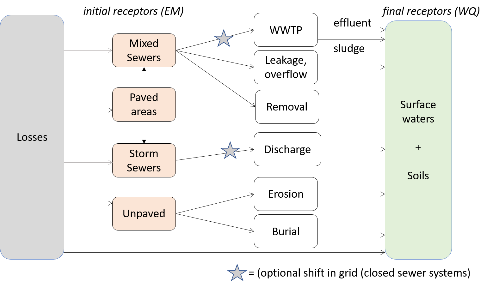

Selection of substance(s) and sources#
Tip
This page contains additional information on the generic D-Emissions module, not direclty related to the HydroMT-delwaq plugin.
The very first part of preparing a water quality model is to define which substances and which emission sources you wish to include in the model.
When a substance is chosen, the sources (or losses) the user wants to consider can be defined (e.g.: atmospheric deposition, domestic, agriculture…). The sources and their emission releases are then quantified or initialized based on available data. There are two types of sources in D-Emissions:
Type A: direct substance release rates by the source (usually in g/day, e.g. atmospheric deposition)
Type B: substance release rates based on a locator: for example a domestic source can be charaterized by the locator population (in cap) and its emission factor (in g/cap/day).
Then in D-Emissions, the substances can enter the catchment via different receptors that are:
Sewage system
Paved areas
Unpaved areas
Stormwater system
Surface waters directly
Soil
When substances reach the receptors, they can then undergo several processes such as burial or removal by treatment in a WWTP before reaching the final receptors of D-Emissions, the surface waters and the soil. The full processes included the D-Emissions model are represented in the scheme below:
As modelling of several substances with multiple sources and processes can be complex, the D-Emissions model has been designed to model each substance one-by-one. This implies that in order to model several substances, the D-Emissions model needs to be run several times.
D-Emissions is an unstructured model and composed of unordered segments. D-Emissions segments represent one environmental layer unit (eg surface waters, soil..). The direction of the flows in D-Emissions between each segment is defined in the pointer file. This pointer file defines not only the direction of lateral flows between segments (eg discharge), but also the direction of vertical flows (flows between the different layers/compartments of a single geographic cell). This means that external flows into / out of a segment (for example precipitation from the atmosphere) are defined in the pointer as flows between a segment and a boundary (for precipitation the boundary is the atmosphere).
By only modelling substances one-by-one, the generic D-Emissions version only considers one environment layer which is the emission or substance layer. As D-Emissions does not deal with fate and transport (no lateral flux between segments), there is then no need to define either a pointer or a boundary file. In essence, D-Emissions calculates the various emitted loads per geographic unit (eg Wflow cell).
For a D-Emissions model, the required hydrological data is:
precipitation
the amount of the precipitation that infiltrates into the soil from unpaved areas
the amount of the precipation that goes directly to surface runoff from paved areas
the amount of the precipation that goes directly to surface runoff from unpaved areas
Note
In this version of EM, the amount of the precipitation that **infiltrates* into the soil from unpaved areas* is dealt with as a sink, since the WQ version does not yet contain a Soil compartment.